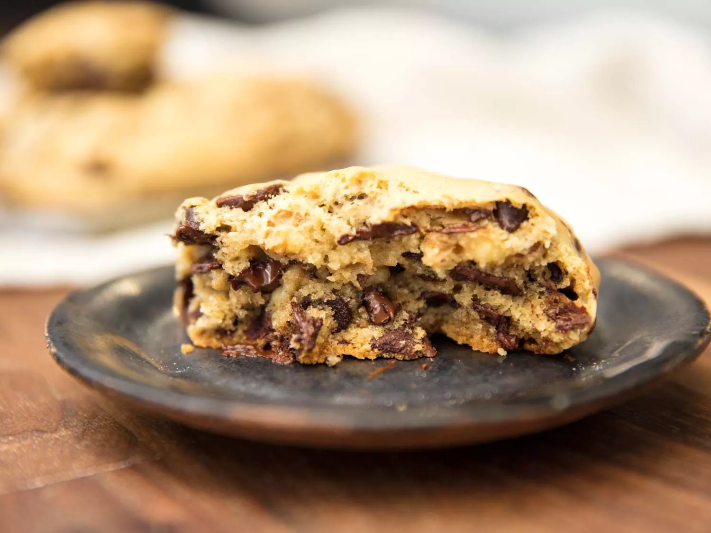
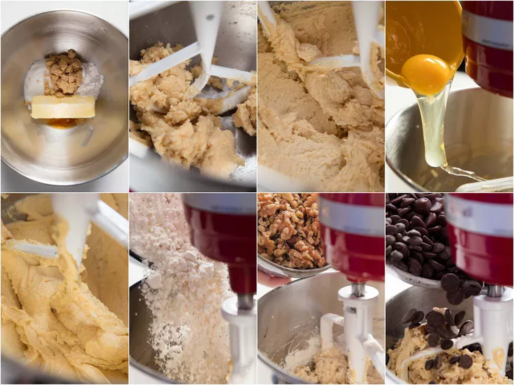
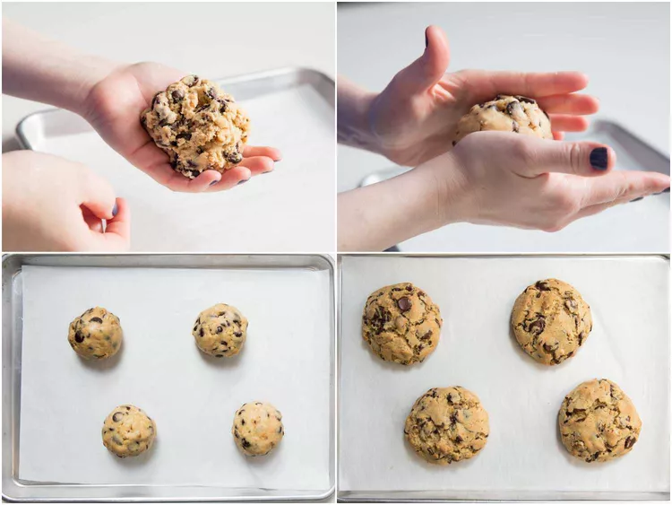
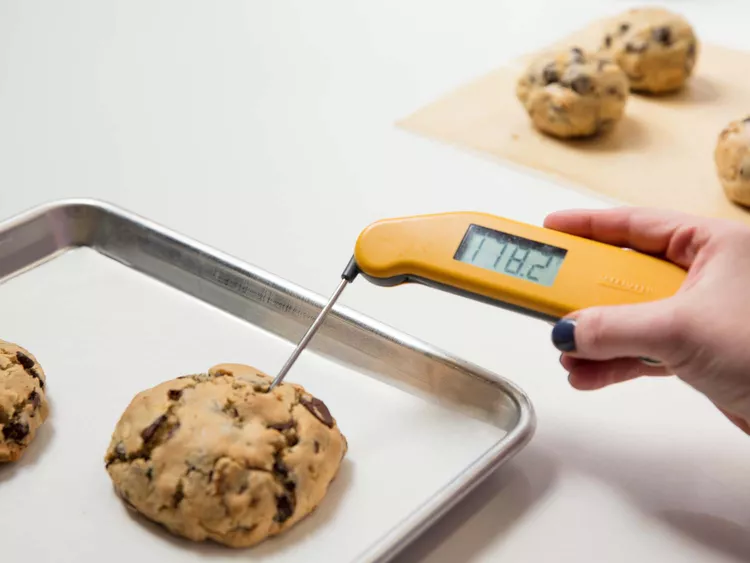
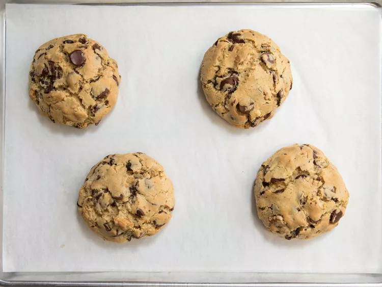

Levain Bakery-Style
Chocolate Chip Cookies
from Stella Parks of Serious Eats

About this recipe...
These will be the best chocolate chip cookies you have ever eaten. In this recipe, author Stella Parks has attempted to create a culinary simulacrum of cookies found at Levain Bakery. They are a testament to decadence, boasting an irresistibly thick and chewy texture that yields a satisfyingly substantial bite, with a crispy exterior giving way to a soft, gooey center. Each cookie is studded generously with rich chocolate chips, ensuring a delightful burst of sweetness in every mouthful. These Levain Bakery-style chocolate chip cookies are sure to leave a lasting impression on all who taste them.
Ingredients
- 4 ounces ulsalted butter, softened
- 4 ounces light brown sugar, firmly packed
- 3 1/2 ounces white sugar, preferably well toasted
- 1/2 ounce (~1 tbsp) vanilla extract
- 2 tsp kosher salt
- 1 3/4 tsp baking powder
- 1 tsp baking soda
- 1 pinch grated nutmeg
- 2 large eggs, straight from the fridge
- 10 ounces (~2 1/4 cups) all-purpose flour
- 15 ounces (~2 1/2 cups) assorted chocolate chips
Directions
To Prepare the Dough:
-
Combine butter, light brown sugar, white sugar, vanilla extract, salt, baking powder, baking soda, and nutmeg in the bowl of a stand mixer fitted with a paddle attachment.
-
Mix on low to moisten, then increase speed to medium and beat until soft, fluffy, and pale, about 8 minutes; halfway through, pause to scrape bowl and beater with a flexible spatula. With mixer running, add eggs one at a time, letting each incorporate fully before adding the next. Reduce speed to low, then add the flour all at once. When flour is incorporated, add chocolate chips and keep mixing until dough is homogeneous.

-
Divide dough into 8 equal portions (about 6 ounces / 170g each) and round each into a smooth ball. Wrap in plastic and refrigerate at least 12 hours before baking; if well protected from air, the dough can be kept in the fridge up to 1 week.

To Bake:
-
Adjust oven rack to middle position and preheat to 350°F (180°C). Line an aluminum half-sheet pan with parchment paper. When the oven comes to temperature, arrange up to 4 portions of cold dough on prepared pan, leaving ample space between them to account for spread. If you like, sprinkle with additional salt to taste.
-
Bake until cookies are puffed and lightly brown, about 22 minutes, or to an internal temperature of between 175 and 185°F (79 and 85°C). The ideal temperature will vary from person to person; future rounds can be baked more or less to achieve desired consistency.

-
Cool cookies directly on baking sheet until no warmer than 100°F (38°C) before serving. Enjoy warm, or within 12 hours; these cookies taste best when freshly baked.
